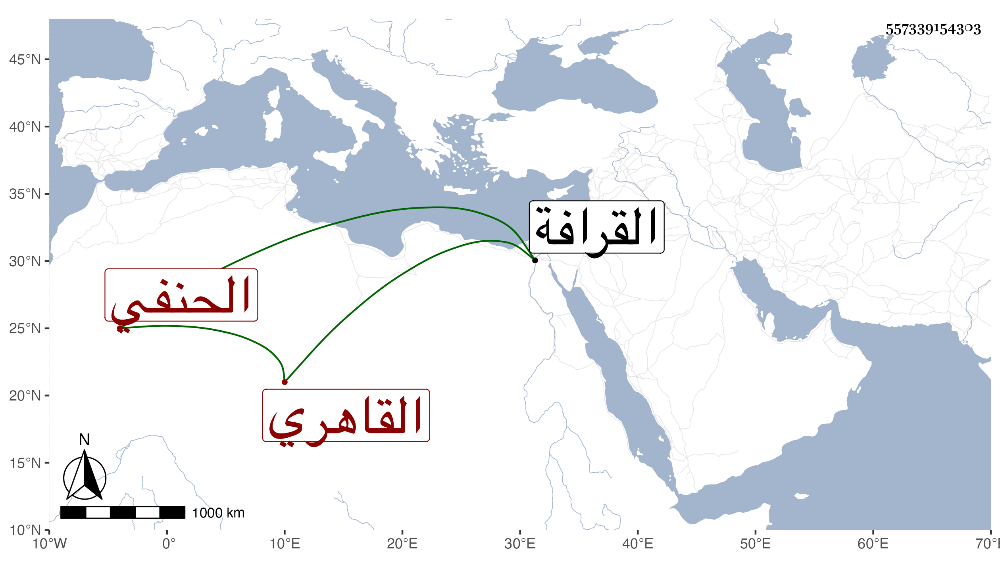

0902Sakhawi.DawLamic.ITO20230111-ara1.EIS1600.557339154303
Biography ID: 557339154303
372
عبد الوهاب بن أبي بكر بن عمر تاج الدين الطوي القاهري الحنفي ويعرف بالهمامي لملازمته خدمة الكمال بن الهمام والأخذ عنه بحيث شارك في الفقه وأصله والعربية وغيرها وأخذ أيضا عن غيره وأقرأ قليلا وحج وجاور في الحرمين ، وكان خيرا متقللا قانعا متواضعا . مات بعد توعكه أياما في ذي القعدة سنة ست وثمانين وصلى عليه بجامع الأزهر في جمع حافل ودفن بالقرب من التاج بن عطاء الله من القرافة رحمه الله وإيانا .
